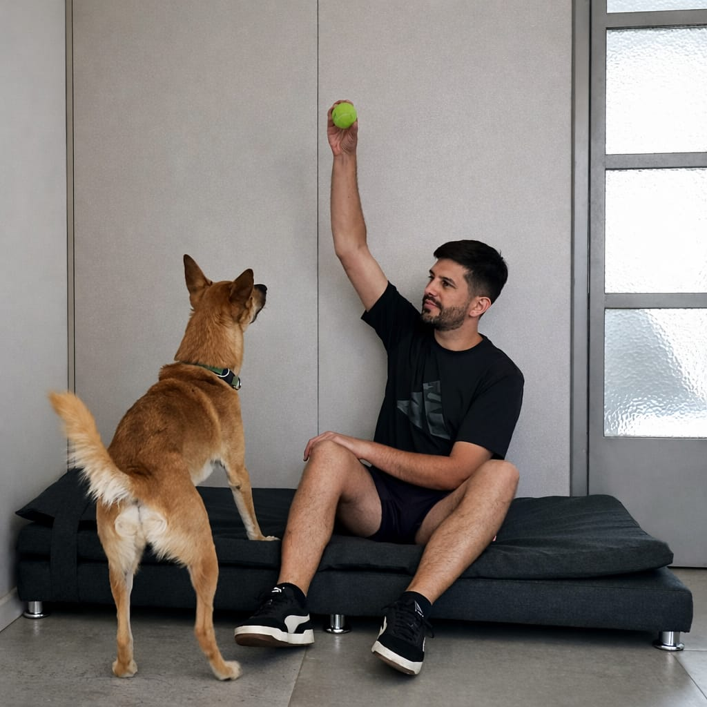
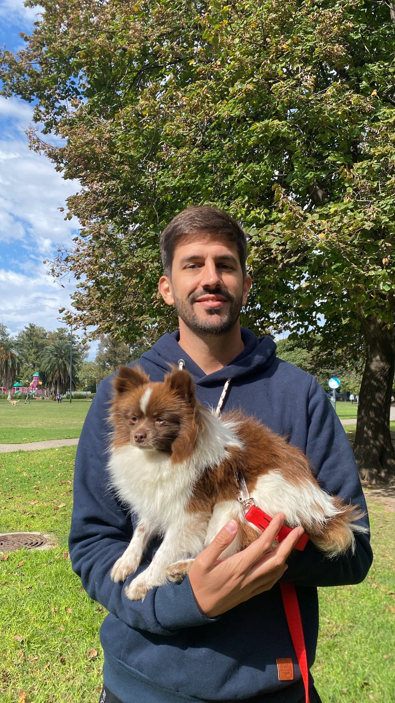
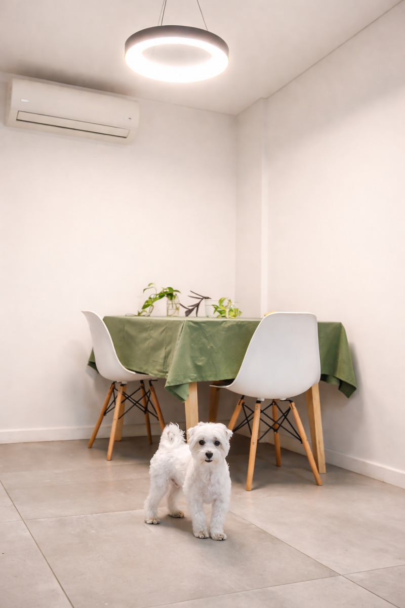
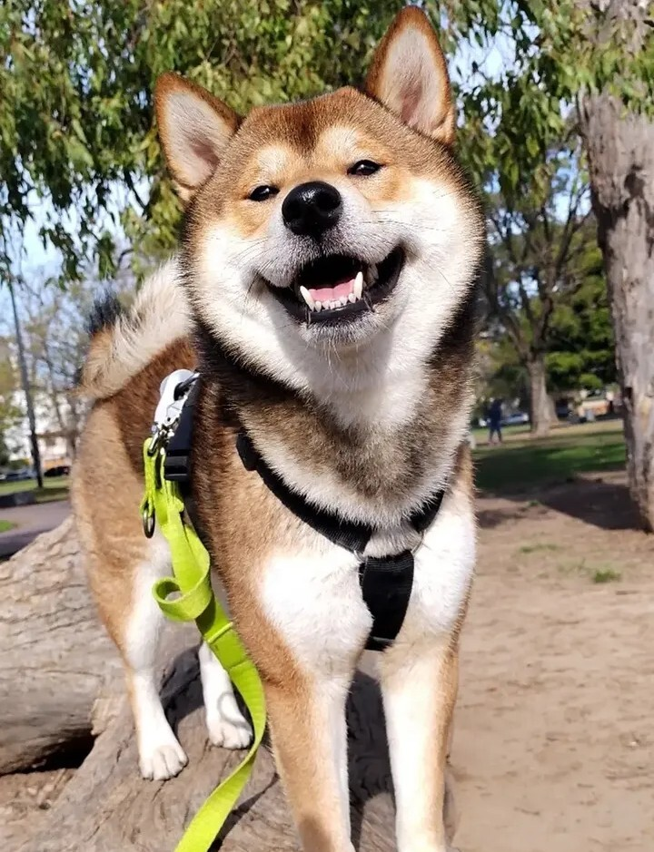
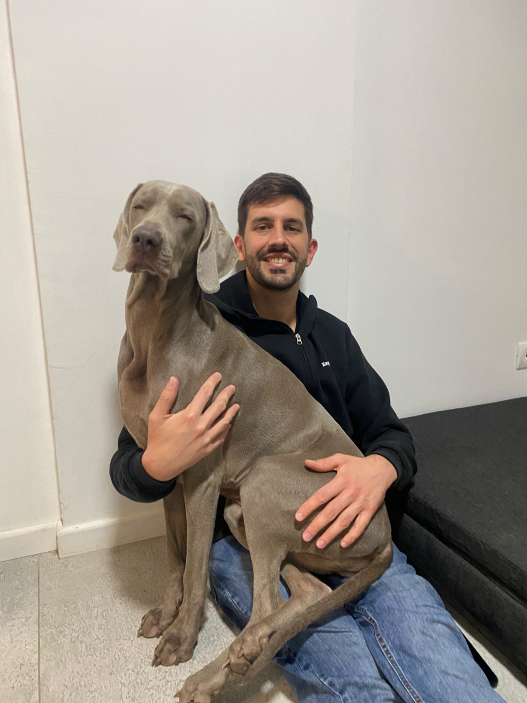

Guardería de Perros Coghlan
Exclusiva y segura
Me dedico única y plenamente a mi guardería.
Soy el único responsable a cargo.
Acompaño y superviso las 24hs.
Consultar disponibilidad

Lo que nos destaca
No hago paseos en manada, solo guardería, por lo cual tu perro va a estar siempre acompañado, no lo voy a sobre exigir, puedo elegir los mejores momentos del día para pasear, evitando calor extremo en verano, lluvias y bajas temperaturas en invierno, puedo regular la duración, los ritmos, tipos de paseo y recorridos/zonas/distancias acordes.
Dos modalidades:
- Exclusiva: Cuido únicamente a tus mascotas, sin otros perros en casa.
- Compartida: Estadía compartida entre dos perros compatibles.
No cuido perros con conductas agresivas.
Comodidades y Ubicación
Cuento con todas las comodidades para tu mascota:
Descanso y Juegos
Una excelente cama, una hermosa cucha para perros chicos, acolchados, comederos adaptables a su altura, juegos, juguetes, peluches.
Pertenencias
Espacio de guardado especial para sus pertenencias si preferís traerlas.
Climatización
Aire acondicionado frio/calor, losa radiante con comando independiente y estufa (fundamental para perros mayores, sensibles al calor y al frio y cachorros).
Alimentación y Rutina
Respetamos y cumplimos con la rutina de alimentación especifica de tu mascota (Uso balanza de ser necesario) (Alimento a cargo del tutor).
Ambiente Tranquilo
Departamento silencioso, en edificio de pocos pisos, y contra frente. (Acceso por amplio ascensor o escaleras espaciosas).
Zona Residencial
Zona ideal para paseos, de veredas anchas, en buen estado y poco transitadas (Vivo a 3 cuadras del Parque Goyeneche, de la Plaza de la estación Coghlan y puedo ir hasta Parque Saavedra caminando o en auto si es pequeño o mediano y tranquilo).
Paseos Diarios
Al menos 4 salidas sanitarias por día (mañana, tarde y noche). ¡Excelentes paseos recreativos todos los días!
Balcón
Balcón amplio 3x2 m, acondicionado para mascotas.
Seguridad y Requisitos
¿Cómo garantizamos la mejor experiencia? Seguridad ante todo, cuento con:
- Cinturón de paseador (Donde ato las correas)
- Correas reforzadas con doble anclaje, largas y cortas
- Pretales tipo H (Todos los talles)
- Cinturón de seguridad para traslados
- Baranda elevada y red para mascotas en el balcón, una excelente reja en la ventana y manija fija en la puerta de entrada
Requisitos básicos:
Para mantener un ambiente sano, seguro y cómodo para todas las mascotas, solo recibimos animales que cumplan con los siguientes requisitos básicos:
- Sin antecedentes de agresividad
- BUEN ESTADO DE SALUD SIN HERIDAS ABIERTAS NI ENFERMEDADES CONTAGIOSAS
- Vacunación completa y al día
- Desparasitación interna y externa vigente
- Ideal una visita reciente al veterinario
- EXCELENTE ESTADO DE HIGIENE.
Valores y Condiciones
Valor del Servicio
Se ajusta según cantidad de perros, tamaño, comportamiento y nivel de energía, pero la base es $50.000 por noche.
Reservas y Encuentros
Las reservas se confirman únicamente con un encuentro previo a la estadía, para conocernos con tu mascota, y con seña.
La seña es del 50% del valor total del servicio, y debe estar cancelado el total en el momento del ingreso.
Ofrezco Paseos o encuentros previos a $10.000 por hora.
Servicio de Traslado
Vinculado a la Guardería:
- Exclusivo para mascotas pequeñas/medianas y muy tranquilas
- El valor de la estadía no incluye el servicio de traslado
- Disponible en CABA y Zona Norte
Referencias comprobables | Certificación GCBA
Experiencia con perros de todas las edades, tamaños, energías, con hiper apego, ciegos y sordos
DNI VERIFICADO | DOMICILIO VERIFICADO
Galería



Seguinos en Instagram
Compartimos fotos, paseos y momentos del día a día con los perros que forman parte de la guardería.
@guarderiadeperroscoghlanRecomendaciones
Experiencias reales de quienes confiaron en la guardería
"Buscamos un cuidador para nuestro maltés y no sólo encontramos un excelente cuidador sino que Snowy encontró un tío. Joaquin es muy responsable, cariñoso y siempre está preocupándose por la seguridad de los perros que cuida y pasea..."
"Joaquin ha sido un excelente paseador y sobretodo cuidador de mi perro Niro, estuvo 21 dias en su guardería durante mis vacaciones y en ese periodo en cada contacto que tuvimos me envió fotos y videos para mostrame como estába."
"Lo conocí de casualidad a Joaquín y como mi perra no estaba acostumbrada a pasear con paseadores ya que es muy miedosa hicimos la prueba con el. Fueron 10 días de adaptación donde demostró una paciencia increíble."
"Súper recomendamos a Joaco! Tenemos una cachorra de 9 meses y la estuvo cuidando 10 días, la verdad es que fue súper atento y nos mantuvo al tanto de todo, ademas de ser muy dulce con ella y encargarse de sus paseos."
"Joaquín es un excelente profesional tanto en guardería como en paseos. Lo que más sorprende es el nivel de recaudos en temas de seguridad (el equipo que usa como paseador, pretal en H), está en todo!"
"Recomiendo muchísimo a Joaquín. Nosotros dejamos a nuestra perrita durante tres semanas y ella nunca se había quedado con alguien que no fuera de la familia y con Joaquín estableció un excelente vínculo."
"Buscamos un cuidador para nuestro maltés y no sólo encontramos un excelente cuidador sino que Snowy encontró un tío. Joaquin es muy responsable, cariñoso y siempre está preocupándose por la seguridad de los perros que cuida y pasea..."
"Joaquin ha sido un excelente paseador y sobretodo cuidador de mi perro Niro, estuvo 21 dias en su guardería durante mis vacaciones y en ese periodo en cada contacto que tuvimos me envió fotos y videos para mostrame como estába."
"Lo conocí de casualidad a Joaquín y como mi perra no estaba acostumbrada a pasear con paseadores ya que es muy miedosa hicimos la prueba con el. Fueron 10 días de adaptación donde demostró una paciencia increíble."
"Súper recomendamos a Joaco! Tenemos una cachorra de 9 meses y la estuvo cuidando 10 días, la verdad es que fue súper atento y nos mantuvo al tanto de todo, ademas de ser muy dulce con ella y encargarse de sus paseos."
"Joaquín es un excelente profesional tanto en guardería como en paseos. Lo que más sorprende es el nivel de recaudos en temas de seguridad (el equipo que usa como paseador, pretal en H), está en todo!"
"Recomiendo muchísimo a Joaquín. Nosotros dejamos a nuestra perrita durante tres semanas y ella nunca se había quedado con alguien que no fuera de la familia y con Joaquín estableció un excelente vínculo."
Contacto y Reservas
Escribime y te comparto un video para que conozcas mejor nuestro espacio. ¿Querés reservar una estadía? ¡Escribime y coordinamos lo que necesites!